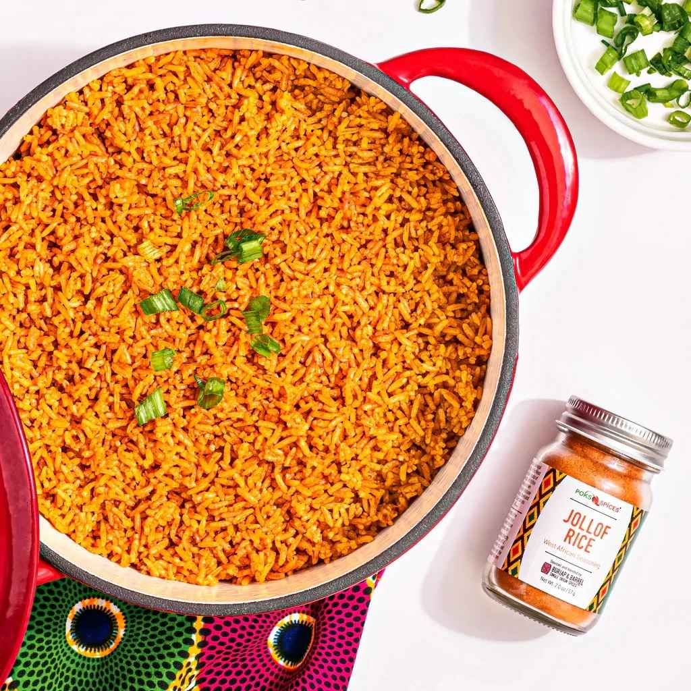

Jollof Rice

What is Jollof?
Jollof, or jollof rice, is a rice dish from West Africa. The dish is
typically made with long-grain rice, tomatoes, chilies, onions,
spices, and sometimes other vegetables and/or meat in a single pot,
although its ingredients and preparation methods vary across
different regions. The dish's origins are traced to the Senegambian
region.
Nigerian Jollof betta>>>
Ingredients List
- Rice
- Canned Tomatoes
- Fresh Tomatoes
- Bell Peppers
- Onions
- Scotch Bonnet
- Garlic
- Ginger
- Vegetable Oil
-
Stock: Your Choice!
-
Seasoning
- Curry Powder
- Salt
- Black/White Pepper
- Bouillon Powder
- Thyme
- Bay Leaves
How to MAKE Jollof
-
The inevitable foundation for building up the flavor in this
meal is to start by sauteeing the Onions. This
should take about 3 to 5 minutes. The next thing is to stir in
the tomato paste. This adds a deep and rich tomato flavor; I
simply fry this for another 5 minutes or thereabout
-
Add the ginger and garlic and cook along with
the tomato paste for another two minutes; Actually, by the time
this is ready, you will notice it in the smell. If you keep it
cooking any longer, you might risk burning them.
-
Add the blended peppers. Usually, there is no
particular time frame for frying this pepper. I often stop when
the sauce becomes really thick, and the oil literally floats on
top of the sauce. At this point, most of the water is gone, and
the sauce no longer smells raw. Trust me, you will know, but
just in case you are still in doubt, I would say maybe 15 to 20
minutes depending on the quantity of water in your blended
pepper.
-
Finally, in building my flavor, I
add the thyme, curry powder, salt, white pepper (good but
optional), and seasoning cubes.
Adjust the seasoning at this point if there is a need to
-
Once the flavor is on point, then, I
stir in the Rice. Make sure you stir the rice
properly until you cover each grain of rice with the sauce
-
Now add the chicken stock. Give it a brief stir
and cover it up with a tight-fitting lid. If your lid is not
fitting enough, simply cover the rice with foil paper before
covering it with the lid. This is because Jollof needs a lot of
steam in order to turn out well.
-
Once the rice comes to a boil,
reduce the heat to medium-low
immediately and continue to
cook until the rice is done, about 20 to 30 minutes
-
Serve with Fried Chicken, Spicy Grilled
Chicken, Grilled Tilapia Fish, or Gizzards and plantains.